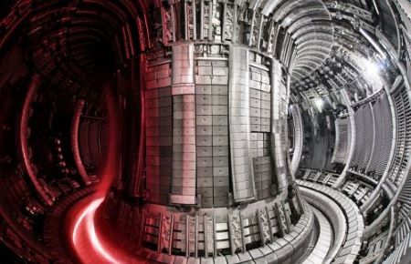
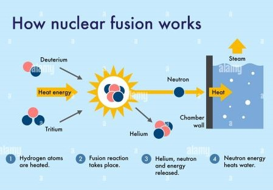

On February 09, 2022, a historic breakthrough occurred at the Joint European Torus (JET) near Oxford, UK. Scientists shattered a 24-year-old record, achieving an unprecedented, sustained energy pulse through nuclear fusion, doubling their previous achievement from 1997. This monumental stride brings us closer to achieving clean and limitless energy generation, akin to the power of the sun.
JET, situated at the Culham Centre for Fusion Energy (CCFE) in the UK, stands as the core of the European Fusion Programme, a global collaborative effort. The astounding 59-megajoule burst of fusion achieved by JET in just five seconds surpasses its own pioneering record, marking a substantial step forward in the quest for controlled nuclear fusion.

In the world of fusion, we face complex challenges. Atomic nuclei repel each other like magnets, making fusion difficult. To overcome this, we need nuclei to come together at extreme speeds so they can merge and release energy. This process needs extreme heat to turn regular gas into plasma — a kind of super-hot matter found everywhere in the universe.
At the heart of this stands the JET reactor — a tokamak, aptly named the "toroidal chamber with magnetic coils." Deep within this doughnut-shaped vacuum, hydrogen gas encounters a transformation of cosmic proportions. Under searing heat and pressure, it metamorphoses into plasma, the very essence of stars.
JET's triumphant performance now illuminates the path for ITER — an audacious global endeavour weaving the scientific prowess of nations. From the European Union to China, India, Japan, South Korea, Russia, and the United States, ITER embarks on a quest to harness the boundless power of fusion.
Since 2005, India has been an integral partner in the ITER Project. India's agency, ITER-India, operates under the Institute for Plasma Research (IPR) and plays a pivotal role in delivering key ITER components, including Cryostat, Shielding, Cooling, Cryogenics, Heating Systems, and Diagnostics.